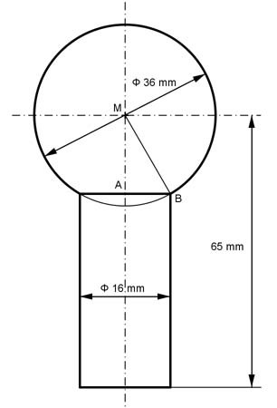

Aufgabe 378 Wie groß ist die Masse m des Kugelbolzens, wenn seine Dichte 7,85 g/cm³ beträgt?  VBolzen = VKugel + VZylinder - VKugelabschnitt dKugel³ * л 36³ mm³ * л VKugel = -------------- = --------------- = 24 417 mm³ 6 6 rZylinder = dZylinder/2 = 16 mm/2 = 8 mm Satz von Pythagoras im Dreieck ABM: AB = rZylinder BM = rKugel = dKugel/2 = 36 mm/2= 18 mm BM² = AM² + AB² |-AB² AM² = BM² - AB² = 18² mm² - 8² mm² = 260 mm² |√ AM = 16,1 mm hZylinder = 65 mm - AM = 65 mm - 16,1 mm = 48,9 mm VZylinder = л * rZylinder² + hZylinder = л * 8² mm² * 48,9 mm = 9 827 mm³ hKugelabschnitt = rKugel - AM = 18 mm - 16,1 mm = 1,9 mm л VKugelabschnitt = --- * hKugelabschnitt² * (3 * rKugel - hKugelabschnitt) 3 л VKugelabschnitt = --- * 1,9² * (3 * 18 - 1,9) mm³ = 196,9 mm³ 3 VBolzen = 24 417 mm³ + 9 827 mm³ - 196,9 mm³ = 34 047,1 mm³ VBolzen = 34,05 cm³ m = ρ * VBolzen = 7,85 g/cm³ * 34,05 cm³ = 267,3 g